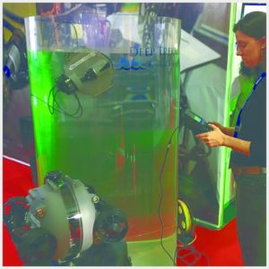
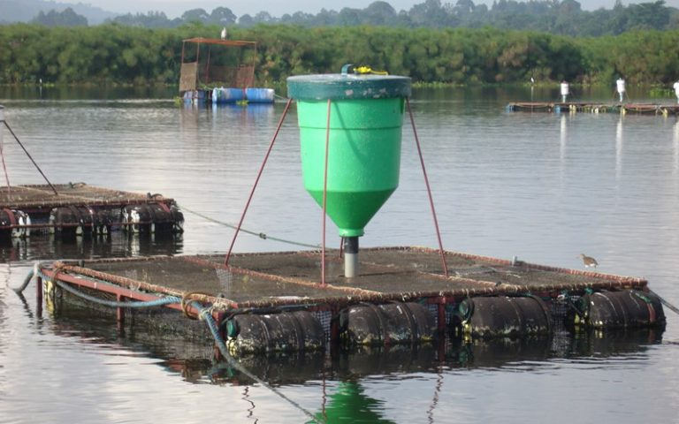

Publicado em 18 de abril de 2018 por Regner Oliveira e Julia Mahalem

Com a tentativa de ocupação dos holandeses no Nordeste do Brasil no século 17, técnicas de cultivo de animais aquáticos, até então desconhecidas, foram introduzidas no país. A partir de então, a produção de peixes se iniciou com a utilização de viveiros como método de cultivo pela costa do mar do nordeste.
Ao passar dos anos, somente em 1934, o pesquisador brasileiro Rodolfo Von Lhering iniciou estudos ictiológicos com espécies nativas migratórias, focando na desova em cativeiro, surgindo no começo dos anos 60 em diante, atividades de estímulos governamentais.
Considerada a atividade agropecuária com retorno mais rápido, nos anos 70 do século passado, o país deu início à um grande avanço em técnicas modernas na aquicultura, o que possibilitou uma produção em grande escala em todos os estados da federação.
Segundo estatísticas da FAO, (2010), de 1970 a 2008, a aquicultura mundial teve aumento na produção de pescado de 3,9% para 36,9%. Dessa forma, estima-se que o Brasil deve registrar um crescimento de 104% na produção do pescado e na aquicultura em si em 2025. O crescimento no país se deve aos investimentos feitos no setor nos últimos anos. Porém, a intensificação da pesca extrativa fez com que muitos dos estoques pesqueiros locais e internacionais fossem reduzidos a patamares não sustentáveis ou, simplesmente, desaparecessem.
Os impactos ambientais causados pela aquicultura dependem do país, da região, da espécie cultivada e do sistema adotado para a produção. Por causa da atividade, os mesmos estão relacionados à acidez da água no ambiente aquático, da ocupação do solo, da redução de oxigênio na água e à demanda de energia do meio. Segundo Guilherme Dutra, diretor do programa marinho da CI (Conservação Internacional) no Brasil, a aquicultura contribui para a acidificação do meio aquático, consequência do aumento da matéria orgânica na água, como acúmulo de dejetos e restos de ração.
Mesmo assim, ainda por estudos realizados pelo CI, a atividade aquicultura ainda é o sistema de produção que apresenta menores impactos ambientais, quando comparada com outros meios de produção de alimentos: o processamento de proteína de peixe emite menos emissões globais de nitrogênio e fósforo, reduzindo os impactos nas mudanças climáticas por quilo de alimento produzido, e a carne de pescado converte um percentual maior de proteína consumível para a saúde humana, gerando menos desperdício.
Em países em desenvolvimento, o pescado é uma das fontes de proteínas mais importante no consumo, na saúde e nutrição dos habitantes das regiões de produção e é considerada uma grande potencializadora na produção de alimento. No entanto, a aquicultura ainda demanda o aprimoramento e a identificação de melhores práticas, o que só deve acontecer quando houver um aumento no investimento em inovações e na certificação das políticas de regulamentação da atividade.
Na necessidade de implantar novas tecnologias e evoluir a produção, a Zootecnia de Precisão se faz de grande salvadora. É com ela que encontramos a área do conhecimento que busca a forma mais adequada da aplicação das modernas tecnologias da informação, as quais são capazes de coletar, processar e analisar as diversas fontes de dados de alta resolução espacial e temporal, para que se tomem as corretas decisões e operações de gestão da produção de interesse.
Os avanços nas tecnologias seriam, portanto, um processo evolutivo na aquicultura, uma vez que iriam, continuamente, se adaptar para a tomada de decisão mais produtiva possível.

Ainda com a utilização da mão-de-obra humana, existem diversas operações de rotina na piscicultura marinha que são realizadas por mergulhadores, como retirada de peixes mortos, inspeção das redes e das estruturas de fundeio, coleta de água e sedimentos. Esse trabalho traz uma série de riscos, não sendo raras as ocorrências de acidentes fatais. Na busca de soluções para essa grave questão, empresas no Chile trabalham com a zootecnia de precisão na implementação e no desenvolvimento da tecnologia robótica, visando automatizar e aperfeiçoar os manejos submarinos nas atividades da piscicultura marinha. Pequenos robôs submarinos, que são operados da superfície por meio de câmeras, costuram e limpam as redes, avaliando a quantidade das incrustações biológicas e realizando a sua lavagem submersa, resolvendo o problema sem necessidade de troca da mesma e, dessa forma, evitando manejos desnecessários e estresse aos animais. Os resultados mostram que há uma redução dos custos, somente para grandes produtores, e melhora da produtividade em grande escala.
Outra inovação é a utilização de alimentadores automáticos para o fornecimento de ração para diferentes espécies de água doce e salgada, que vêm sendo utilizados para a melhoria da conversão alimentar, garantindo a qualidade ambiental com a diminuição da acidez do meio aquático com menos sobras de ração.
A Zootecnia de Precisão é um tema abrangente, sistêmico e multidisciplinar, não se limitando à cultura nem à região, assim como a aquicultura em si, podendo ser uma técnica que se casa muito bem com a atividade.
Há ainda muitos desafios a serem vencidos para que consiga apresentar resultados mais expressivos no país com a aquicultura, como o aumento da captura dos pescados e a redução dos impactos ambientais.
Por isso, pesquisas no ramo e o seu desenvolvimento podem ser a solução em um futuro próximo, já que a boa qualidade e o incremento das novas técnicas de pesca mostram o quanto o país pode avançar no setor. A troca de informações tornou-se a melhor forma de ampliação de resultados, conhecimentos técnicos e melhora da qualidade dos procedimentos para as condições do desenvolvimento tecnológico.
Com toda a biodiversidade de flora e fauna presente em território brasileiro, há diversos peixes e outras espécies aquáticas que apresentam potencial específico para comércio e que ainda não foram explorados. O país, por conta de seu histórico de ampliação das atividades no setor e da grande disponibilidade de água, se mostra um país promissor para o crescimento da Zootecnia de Precisão na aquicultura quando há investimento e vontade de crescer de seus produtores.